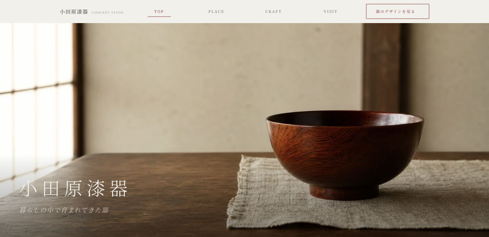
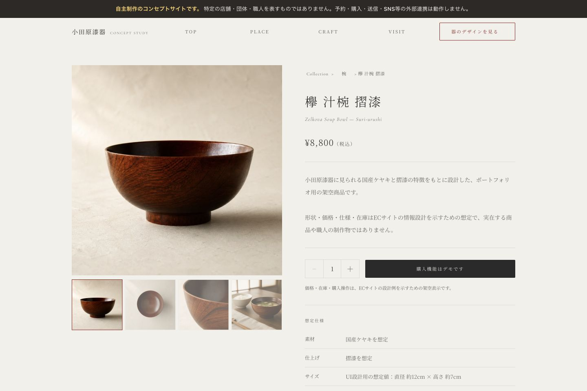

工芸のコンセプトサイト
小田原漆器
工芸の紹介と商品選びをつなぐWebサイト
土地や技法を紹介するページに加え、器の種類による絞り込みと商品写真の切替を実装。工芸の見せ方と、商品を比較するための操作を一つのサイトにまとめました。
自主制作・架空案件 ／ 情報設計・デザイン・HTML・CSS・JavaScript

ターゲット・ペルソナ
設計上の想定
- ターゲット
- 漆器に関心のある生活者・観光客
- ペルソナ
- 初めて使う器を探し、素材や使い方を確認しながら選びたい人。

商品詳細の画面
器を探す・写真を切り替える
商品詳細は写真と仕様を左右に並べ、サムネイルから正面・上面・木目・使用イメージを切り替えられるようにしました。写真の選択状態はaria-pressedでも示しています。
一覧には器の種類による絞り込みを実装。詳細まで閲覧できる商品は一部に限られ、カートと決済は実装していません。
商品詳細の実画面を見る制作の背景
工芸を知る、器を選ぶ
技法を詳しく知りたい人と、日々使う器を探したい人では、最初に必要な情報が異なります。土地・技法・見学の案内と、器のコレクションを分けて構成しました。
トップから順番に読むだけでなく、ナビゲーションから関心のある内容へ移れます。商品詳細では素材や仕上げを説明し、背景への関心も補えるようにしました。
商品情報を読みやすく
大きな明朝体と落ち着いた色で工芸の印象を整えつつ、価格や素材などの情報は横組みでまとめました。写真は切り抜きだけでなく、使う場面も切り替えて見られる設計です。
スマートフォンでは内容を縦に並べ、一覧のフィルターと商品写真の切替を操作できます。全画面メニューにはEscapeキーとフォーカス制御を実装しています。
制作範囲
制作概要
- 担当
- 情報設計・デザイン・フロントエンド実装
- 構成
- 土地・技法・見学・器の一覧・商品詳細などの複数ページ
- 技術
- HTML / CSS / JavaScript
- 実装範囲
- ページ間の回遊、器の絞り込み、商品写真切替。カート・決済・実際の販売は行いません。
特定の団体・店舗・職人の実績を表すものではありません。
実際の画面と操作は、制作デモで確認できます。